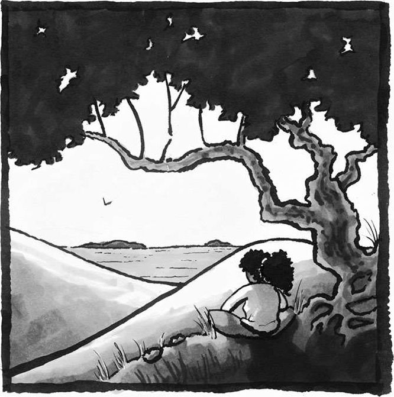
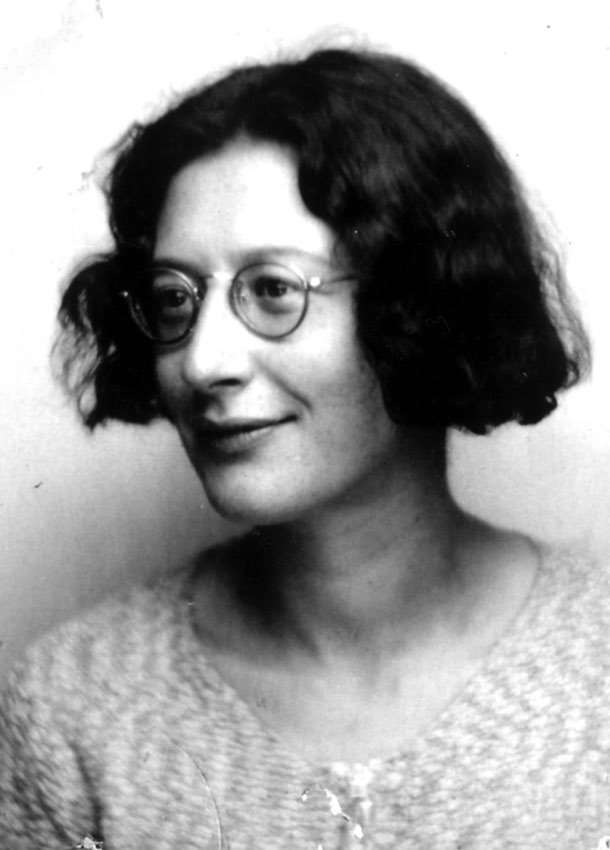
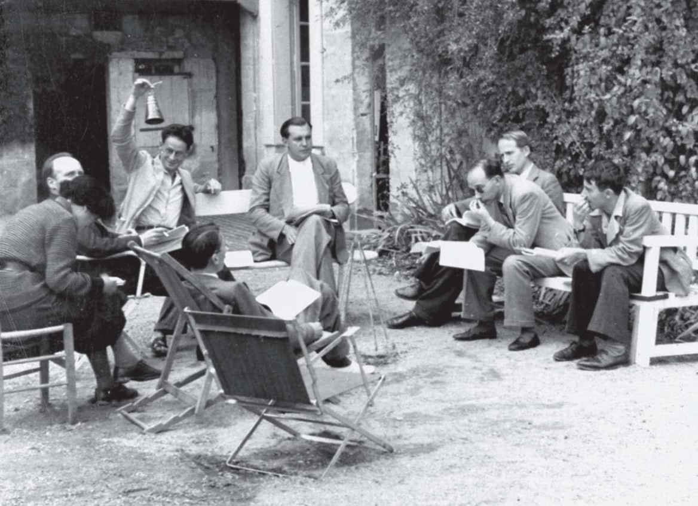
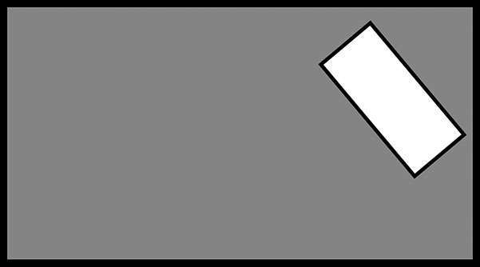

1 繁荣
每个人都在无声地呐喊，期望自己能够得到他人的正确解读。
——西蒙娜·韦伊
（Simone Weil）1
克里斯托弗·杰克逊是一名囚犯，目前被羁押在戒备森严的联邦监狱中。从 14 岁开始，他就常年游走在犯罪的边缘，频繁踏进法律的禁区。他没有读完高中，并且染上了毒瘾。19 岁那年，他卷入了一系列持枪抢劫案件，并因此被判入狱服刑 32 年。
读到这里，你对克里斯托弗可能已经有了初步印象，正在好奇我为什么要用他的故事作为开场白。那么问题来了：如果让你在心中构建一个数学爱好者的形象，你会联想到克里斯托弗（后文简称“克里斯”）这样的人吗？

入狱 7 年之后，克里斯托弗给我写了一封信，信中这样写道：
我一直对数学情有独钟，可惜当时年少轻狂，生活环境也比较恶劣，导致我一直没能意识到接受教育的重要意义，也没能预料到教育给人们带来的种种益处……
过去三年当中我买了很多参考书。认真学完之后，我对《代数Ⅰ》《代数Ⅱ》《大学代数》《几何学》《三角学》《微积分Ⅰ》《微积分Ⅱ》有了深刻而具体的理解。
再想想刚才那个问题：如果让你在心中构建一个数学爱好者的形象，你会联想到克里斯这样的人吗？
每个人都在无声地呐喊，期望自己能够得到他人的正确解读。
西蒙娜·韦伊（Simone Weil，1909——1943）是法国一位著名的宗教学者，同时也是一位广受尊敬的哲学家。不过，很少有人知道她其实就是赫赫有名的数论学家安德烈·韦伊（André Weil）的妹妹。
西蒙娜认为，解读一个人其实就相当于对其进行某种分析和判断。她说：“每个人都在无声地呐喊，期望自己能够得到他人的正确解读。”我想，这或许也是西蒙娜心中的一种呐喊吧。虽然她和哥哥一样热爱数学，一样投入了很多心血，但在哥哥耀眼光芒的遮掩下，她常常会对自己产生一种错误的、负面的认知。在给导师的一封信中，她这样写道：
14 岁那年，我逐渐陷入了那种随青春期袭来的无边的绝望。我开始认真考虑是否应当就此离开人世，因为我发现自己的资质是如此平庸不堪，而我哥哥又是如此的天赋过人，他青少年时期的耀眼程度甚至可以和布莱兹·帕斯卡（Blaise Pascal）这样的人物相媲美。相比之下，我更加深刻地感受到了自己的平凡。其实我并不介意自己没有取得显见的成功，真正让我伤心的是，我将因此被彻底排斥在那个卓越超然的王国之外，那里只有真正的伟人才能进入，那里只容得下真理。倘若我的生命和真理背道而驰，那我宁愿去死。1

西蒙娜·韦伊，摄于 1937 年左右（拍摄者：西尔维亚·韦伊）
各种精妙的数学实例可谓贯穿了西蒙娜的整个哲学创作生涯，从中我们可以真切地感受到她对数学的由衷喜爱。2在布尔巴基学派（布尔巴基是一群改革派法国数学家的笔名）的照片中，我们一眼就可以看到西蒙娜，此时她正与安德烈在一起，那唯一的一抹女性身影在照片中显得格外孤单，或许是因为这种充满了插科打诨的会议对女性来说不算特别友好。3

布尔巴基学派的某次聚会，摄于 1938 年左右。
画面左侧的女士便是西蒙娜·韦伊，此刻她正低头看着自己的笔记本，而安德烈·韦伊正在晃铃（拍摄者：西尔维亚·韦伊）
我常常想，假如西蒙娜没有一直活在安德烈的阴影中，她和数学之间的关系会不会变成另一番模样？4
每个人都在无声地呐喊，期望自己能够得到他人的正确解读。
我不仅是一名热爱数学、享受数学的数学迷，也是一名数学教师，一名数学科研人员，同时还是美国数学协会的前任会长。看到这一堆头衔你可能会想，我和数学之间天生就有一条牢不可破的纽带。尽管我很不喜欢“成功”这个词，可大家总把我和成功联系在一起，搞得好像我在数学上的成绩全部来源于赢得的奖项和发表的论文似的。从某些方面来说，我的学习条件的确不错，比如中产阶级的经济背景，以及积极督促我努力进步的父母。即便如此，即便我追求的目标并不是成就过人，而是某些更为崇高的东西，我对数学的探索之路也并非一帆风顺。
很小的时候我就迷上了数学中的那些奇思妙想，渴望能够学到更多相关知识。可惜我成长在得克萨斯州南部的一个偏远小镇，学习机会极其有限。此外，由于我身边立志读大学的同学并不是很多，我所就读的中学也就没有提供什么像样的高阶数学课程或高阶科学课程，我的社交圈子中也没有几个人对数学感兴趣。虽说我的父母愿意尽其所能地为我提供学习上的帮助，可他们其实也想不出什么实际办法来满足我对数学的渴望，再加上当时互联网尚未问世，想要找到学习资源就更难了，我只能把大部分精力放在公共图书馆那些陈年旧书上。考上得克萨斯大学之后，我对数学的热爱与日俱增，这种热爱一路跟随着我来到了哈佛大学，陪伴我攻读博士学位。可是入学之后，我逐渐感到自己和其他人格格不入，因为我并非毕业于常春藤盟校，入学时也不像其他人一样早已系统地掌握了相应的研究生课程。我觉得自己就像西蒙娜·韦伊一样，站在未来那些安德烈·韦伊们的阴影之中，脑海里萦绕着可怕的念头：既然我和他们之间差距这么大，那我是不是根本没有任何机会在数学领域大放异彩？
有个教授干脆直接跟我说：“你这种人不可能成为一名成功的数学家。”如此辛辣的评价犹如晴天霹雳，我不得不开始认真思考，世界那么大，学科那么多，我为什么非要学数学呢？事实上从事数学科研工作不仅意味着对数学知识的汲取，还意味着你必须用强大的自信和良好的思维习惯武装自己，不断攻克新的难题。可不知怎的，我成了被苛评所伤、开始对自己的数学天分产生怀疑的那群人中的一个。的确，我们身边有不少人看不到学习数学的意义，甚至有人根本没有机会接触到高质量的数学教育。在重重困难面前，我们每个人都会很自然地去思考这样一个问题：
我到底为什么要学数学呢？
为什么被关在牢房里的克里斯要学习微积分，即便他在剩下的25 年牢狱生活中无法像自由人一样将其应用到工作和生活当中？数学能给他带来什么好处？为什么西蒙娜如此痴迷于超然的数学真理？她迫切渴求的那些更深层次的数学知识能给她和世界带来何种改变？为什么在已经有人以直接或委婉的方式告诉你，你根本不适合学数学的情况下，你仍然觉得有必要坚持下去，对自己“数学探索者”的身份丝毫不动摇？
如今有很多人在思考如何才能将我们的社会和数学正确地关联起来。难道数学仅仅是一个助你大学毕业、成功迈入职场，从而实现人生现实目标的工具？难道数学落在普罗大众的手里只能是废铜烂铁，只有在精英人士的手中才能变成强兵利刃？如果一辈子都用不上自己的所学所得，学习数学还有没有意义？很多人都在担心，将来的工作可能完全用不到之前学到的那些数学知识。
事实上，在数字革命和信息经济转型带来的巨大社会变革中，我们正在亲眼见证工作方法和生活方式的迅速转变。如今，包括那些核心岗位在内，数学工具在每个工作领域中都占据着相当重要的地位；全世界市值最高的四个公司全部是科技公司 5，这意味着权力越来越集中在那些数学能力极强的人的手中。6不仅如此，年轻人日常生活中使用的各种工具也和数学有着千丝万缕的联系。比如搜索引擎可以满足我们每一次突如其来的好奇心，其核心算法就是线性代数；屏幕上的各种广告也是基于博弈论推送到我们面前的。再比如已经变成数字管家的智能手机，可以在代数的帮助下把我们的数据锁在一个个橱柜里，在基于统计学设计出的传感器的帮助下准确识别我们的语音指令，在解压缩算法的帮助下播放出一段段令人身心愉悦的美妙音乐。
可惜的是，我们的社会没能认真承担起相应的责任，既没做到因材施教，也没能唤起大家对数学的学习热情。很多在校教师缺乏足够的教学资源，面临无从下手的窘境。过时的课程设计和教学安排，根本无法让学生们感受到探索数学世界的乐趣，也无法让他们看到数学和文化之间的关联，进而也无法让他们意识到数学在生活的各个方面所发挥的重要作用。我们经常能听到这种声音：高中生学代数没有用，数学学不好也没关系——这些声音在不断暗示大家，数学最好还是留给那些专业人士。7很多大学数学系教师不愿教授入门课程，还有很多目光短浅的教师轻视本科学位，认为它只不过是向博士学位输送人才的通道。几十年来，每一个教育阶段——从小学到大学——都有人呼吁“改变现有数学教育模式”。8遗憾的是，这种改变相当缓慢，部分原因是数学教学常常沦为超越教育本质的政治纷争的背景。9
我们现有的教育模式根本没有达到当今社会应有的水平，而且就像大多数不公正的事情一样，最容易受到伤害的往往是弱势群体。由于缺乏数学学习途径，并且数学受欢迎的程度也不高，穷人和其他弱势群体承担了一系列令人扼腕的严重后果。10没有充分挖掘每一个人的才智和潜力，对全人类而言都是一个巨大的损失，这将严重限制子孙后代处理问题的能力。
我们在人才培养方面的失败已经对社会造成负面影响。比如我们可以轻易地被高科技设备所操纵，因为人们即便弄不懂设备背后的原理也愿意让它们去代替我们做出决定。我们会在不知不觉中被各种算法分类、追踪、分化——根据用户阅读习惯推送不同内容的新闻，根据收入情况提供不同额度的贷款，甚至在邻里之间激起不同的情绪。11我们看到，企业家不愿意批评自己公司提供的电子设备，政治家由于数学知识不足，无法让无良商家承担起自己该负的责任，而“仓促上阵”的公众也不知道如何处理自己和这些高科技之间的关系。
尽管我们都知道技术的背后是数学在“作祟”，可那又怎样呢？数学在人们的心中还是一副冰冷无情、只认死理、毫无生气的样子。我们感受不到自身和数学之间有任何情感上的关联，任由数学被心怀叵测之人滥用似乎也成了一件无可奈何的事。
这种现状可以改变。只要有充分的灌溉，数学就能在我们每一个人的心中生根发芽，让我们看到它的神奇和强大，让我们自发承担起相应的责任。在当今世界，这样做的必要性怎么强调都不为过，而且利害攸关。
一个脱离了数学情怀的社会，就如同一个缺少了音乐会、公园、博物馆的城市。和数学擦肩而过，你的生命就彻底失去了与美妙思想同歌共舞的机会，也失去了一个观察世界的绝佳角度。理解数学之美将是一场与众不同、令人心醉神迷的体验，每个人都不该放弃享受数学的权利。
我们每个人，不论身份、国籍，都能培养起对数学的情感，都能和数学建立起超乎想象的关联，都能看到彼此的多样性。
我想把这些话传达给那些因数学能力遭受他人冷言冷语以至变得意志消沉的人，那些逐渐对数学感到厌倦最后变得心灰意冷的人，那些一直对万物抱有一颗好奇之心，却因缺乏自信或缺少相应资源而无法接受数学教育的人。我还想传达给那些从未发现数学之美的艺术家，那些自认和数学毫无关联的上班族，那些觉得普通人根本学不了数学的专业人士。
我还想对那些正在从事数学教育工作的人，以及那些感觉自己一生都不会有机会去教别人学数学的人说：其实我们每个人都是一名数学教师，只是有些人没有意识到这一点。我们会在交谈之中不由自主地表现出自己对学习数学的态度，每一句话每一个词都有可能对他人产生不可磨灭的影响。比如你可以在对话中流露出负面情绪：“我数学向来很差”“数学是男孩子们的学科”“千万别和她一起玩——她是个喜欢数学的怪胎”“儿子啊，我身上没有任何数学天赋，我感觉你可能遗传了我的基因”“你怎么又修了一门数学课啊”，等等。你也可以选择用积极的话语去鼓舞他人：“学数学就跟探险一样好玩”“既然我能提高罚球水平，那你肯定也能提升自己的数学水平”“数学能帮你看清事物背后的规律”“每个人都有希望在数学之路大展宏图”。
也许将来某一天你会成为孩子的父母，或是叔叔阿姨，或是青年团体领袖、社区志愿者，抑或是能够对身旁之人产生影响的其他身份——如此一来，你实际上就在扮演数学老师的角色。如果你在辅导孩子写作业，那你就是在扮演数学老师的角色。如果你对课业辅导有一种恐惧心理，那你就是在向孩子传递一种对数学的态度。研究表明，对数学感到焦虑的父母会把这种焦虑传递给孩子。事实上，假如这种父母拒绝辅导孩子的课业，反而能降低传递焦虑的可能性。12因此，你对数学的态度不仅对你自己很重要，对你的孩子来说一样重要。
正确解读彼此，需要我们每一个人——无论你是在数学之路上一蹶不振，还是一路坚持看到了曙光——改变自己对数学的认知，不要再戴着有色眼镜来看待“谁应该学数学，谁不应该学数学”这样的问题。相应地，教师们也需要改变自己的教学观念。我们要用全新的方式去讲述数学知识。如此一来，必将有更多的人发现数学和人类内心深处的渴求紧密相连，从而被数学之美吸引。
因此，如果你问我为什么学习数学，我会回答：“因为数学能够让人生焕发出应有的光彩。”
换句话说，数学能够让人繁荣发展。
我所认为的繁荣，指的是知行合一，指的是每个人都能在充分发挥自己潜能的同时帮助他人挖掘潜能，指的是行事果敢自信，懂得尊重他人，即便身处逆境也坚持自我。这里的繁荣不等同于幸福快乐，也不单指某种心态，而是代表着人类良好的生活状态。古希腊人专门有一个词用来形容人的这种状态——eudaimonia。他们认为这代表了最高境界的真善美：“一种集所有美好于一身的至善至美，一种足以让人过上幸福生活的能力。”13希伯来语中也有一个与之类似的词——shalom，它通常被用作问候语。英语中一般会将“shalom”译为“peace”（宁静平和），但实际上这个词的内涵远不止于此。如果有人对你说“shalom”，其本意是衷心祝愿你的人生能够枝繁叶茂，一路充满幸福与快乐。除此之外，阿拉伯语中也有一个类似单词： salaam。
古往今来，人们一直在探讨人生这个最根本的问题：如何才能实现人类繁荣？什么样的生活才算是幸福生活？哲学家亚里士多德说繁荣和幸福来自美德的实践。希腊哲学对美德的定义是“能够引导人们择善而行的卓越品格”。由此可见，这里的美德不仅指道德，还包括某些其他东西，比如勇敢、智慧、坚韧等品格。
我认为适当的数学训练有利于人们形成丰盈的美德。无论你从事何种职业，无论你最终将走向何方，这些美德都能助你一臂之力。人类向美德靠拢的动机，源于内心深处的渴求。这种渴求人人皆有，它从根本上激励着我们所做的一切。我们可以将这种渴求转化为对数学的不断追求，由此感悟到的美德反过来也能够促进你的充盈。
假如把对数学的探索比喻成扬帆远航，那么人类内心的渴求就是推动帆船前行的海风，而美德就是人们在航行中磨炼出来的品格——正念、专注，以及“人风合一”的融洽。当然，航行可以将我们从A地带到B地，但这并不是航行的唯一理由。要想驾驭好帆船，我们必须掌握一些技巧，但我们学习航行可不是为了能打出更结实的绳结。同理，掌握数学这门技能也很重要，但我们不能本末倒置，将解题技巧视为最终目标。数学在社会中的应用千变万化，而不变的是探索数学世界所获得的那些美德。
为了让大家看到数学人性化的一面，包括我在内，越来越多的人开始不约而同地发出呼声，呼吁大家去发现数学中的人性美，呼吁社会对数学教育进行改革，多多展现数学充满人文关怀的一面，改变数学在大家心中枯燥乏味的刻板印象，从而减少数学教育中存在已久的不平等现象。14这个目标值得称赞，但根本不可能实现，而且往往会遭到抵制，除非我们能够让大家理解学习数学的根本目的，让他们不再为了现实目的而拼命地刷题。
当人们问：“我这辈子真的有机会用到数学知识吗？”他们实际想问的是：“数学对我来说到底有什么价值？”15这些人把数学的价值和实际效用弄混了，因为他们没有意识到数学更广泛的意义。站在更宏观、更深远的角度看待数学，可以唤醒我们埋藏在内心深处的对数学的渴求，让我们认识到数学能够带给学习者的众多美德与品格。
因此，接下来的每一章内容都将致力于阐述人们内心的某种渴求，每满足其中一种渴求，都意味着我们又朝着人生丰盈的方向迈出了一步。在每一章中，我都会向大家展现为什么对数学的不懈探索和人们内心的渴求相契合，为什么对数学真理的追求能够帮助人类培养美德，建立优秀品格。如果你希望通过数学学习焕发人生光彩，那就试着改变自己与数学相处的状态，使之契合于我们内心的渴求，这是我们共同的责任。
我刚才多次提到美德的概念，有些人可能会产生误解，以为我在告诉大家学了数学就能让你变得比其他人更好。不，不是这样的，我的意思不是说数学能给你带来更多价值，帮你赢得更多尊重，而是说如果大家能够遵从内心的向往与渴求，坚持不懈地探索数学世界，那么在此过程中培养起来的品格和思维习惯将帮助你度过更充实的人生，让你看到生活更精彩的一面。俗话说，金无足赤，人无完人。我们每个人都是一件不完整的艺术品，都有很大的提升空间。虽然提升自我、培养美德不只有数学一种途径，但探索数学的确在某些特定品格上，比如在培养清晰的思维能力与灵活的推理能力方面，拥有自己的优势和特色，不是吗？
此外，看到我对数学的评价如此之高，有些人可能会觉得我在向大家灌输“数学是人生的终极目标，其他方面的追求都没有数学重要”的思想。其实不然，我们每个人都必须摸索出一个最适合自己的、可以和灵魂产生共鸣的人生目标。不过话又说回来，数学的的确确是人类智慧的结晶，值得我们去探索和追求，也值得我们去帮助他人这样做。因为它能满足人类最基本的渴求，以自己特有的方式帮助人们体验更美妙的人生。
我希望你能够通过内心的这些渴求重新认识自我，将自己视为一名数学探索者，学会站在数学的角度思考问题，数学的大门永远为你敞开。有些渴求比较特殊，你可能还没摸清它们和数学探索之间的关联，对于这些问题，我希望你可以跟着本书的节奏获取自己想要的答案。如此一来，你便能够以全新的方式感受数学，认识到数学不仅是各种事实和技巧的工具箱，还是促进所有事物欣欣向荣的力量。
数学的探索始于不断提问。因此，我将在本书的各个章节中设置一些有趣的数学题目。放心，题目不会很难，如果你不想做可以直接跳过，也可以挑一些自己感兴趣的题目钻研一下。题目的提示和答案附在本书的最后。不过在翻阅答案之前，我建议你先思考一下每个问题，尝试自己寻找游戏的解法。
------切分蛋糕------
一位父亲在一个长方形的平底锅里烘制了布朗尼蛋糕，作为他两个女儿放学后的甜点。两个女儿还没到家，他的妻子就走了过来，偷偷在长方形蛋糕中间的某个位置随机切走了一块同样是长方形的小蛋糕。注意，小蛋糕的边不一定与平底锅的边平行。
现在，这位父亲该如何在只切一刀的情况下，平均切分剩下的蛋糕，让两个女儿拿到一样大的蛋糕呢？
美国全国公共广播电台（NPR）的脱口秀节目《汽车闲聊》中曾经出现过类似的题目。[1]

------切换电灯开关------
想象有 100 盏灯，每盏灯都有一个独立开关，开关的编号依次为数字 1~100。所有灯排成一行，且一开始都是关着的。现在你开始执行以下操作：切换所有编码为 1 的倍数的开关，然后切换所有编码为 2的倍数的开关，接着切换所有编码为 3 的倍数的开关，以此类推，直至 100 的倍数的开关。（一次切换指的是将关着的灯打开，或将开着的灯关上。）
当你完成 100 步操作之后，哪些灯是开着的，哪些灯是关着的？你发现规律了吗？你能说明原因吗？
弗朗西斯先生，您好：
我是克里斯托弗·杰克逊，目前正在美国肯塔基州松节市麦克里瑞监狱服刑。19 岁那年，饱受毒瘾折磨的我浑浑噩噩地卷入了一系列持械抢劫案件，并因此被判处 32 年监禁，幸运的是当时并没有人受伤。如今我已经 27 岁，算下来入狱已 7 年有余。
我从小就对数学情有独钟，可惜当时年少无知，生活环境也较为恶劣，没能意识到持续接受教育的重要意义和潜在收益。14 岁那年我离开了监护人的家庭，开始频繁地和青少年司法系统打起了交道。
不久，我彻底放弃了学业，逐渐走上了违法犯罪的道路。17 岁时，在个案管理员和其他人的鼓励和支持下，我成功考取了普通教育发展证书，并拿到了亚特兰大技术学院的录取通知。可惜没上几天我就重蹈覆辙，再次放弃学业，陷入了更深的犯罪旋涡。
接下来的几年我被毒瘾折磨得痛苦不堪，并逐渐成了监狱牢房的常客。最终，就像信中开头所写的那样，我犯下了令我服刑至今的重罪。21 岁时，我承认了起诉书中的两项指控，随后便被押送至联邦监狱候审，最终转送到现在这座我已经待了 4 年多的监狱。
在过去 7 年当中，我读了大量和哲学、数学、金融学、经济学、商学、政治学相关的专业书，学习兴趣也随着知识的增长变得越发浓厚。最近 3 年我购买了更多的书，研读之后，我对《代数Ⅰ》《代数Ⅱ》《大学代数》《几何学》《三角学》《微积分Ⅰ》《微积分Ⅱ》有了深刻而具体的理解。
其实我知道，我的人生之所以如此千疮百孔，主要是因为我冥顽不化，不愿意听从那些过来人和权威人士的劝告，虽然他们的确比我懂得更多。尽管我幼年丧父，但我还有爱我的母亲、阿姨、外婆，她们是真心实意地想将我抚育成才。每当太阳升起，我都会意识到我的生命又向前踏出了一步，我决不能让已经发生的、我自己亲手酿成的这些悲剧影响我对生活的激情，影响我对美好未来的期待。
我之所以能够得知您任职机构的具体信息，是因为我有幸拜读过某位教授的著作，而这位教授刚好和您在同一个机构任教。此外，我常看的电视节目也经常提及您的任职机构。
虽然我经济能力有限，不过我还是想问问您，我能不能以函授教育的方式攻读贵校的数学学位。我明白您工作繁忙，时间有限，能在百忙之中阅读此信令我不胜感激。就此搁笔，不再叨扰。
克里斯托弗·杰克逊
2013 年 11 月 26 日
[1] 感兴趣的读者可以自行查阅：https://www.cartalk.com/puzzler/cutting-holey-brownies。